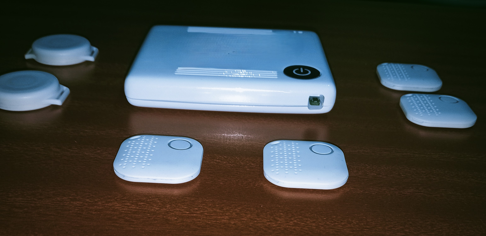
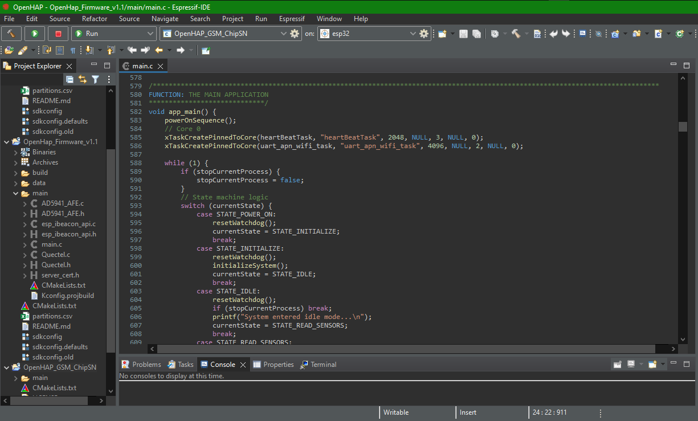
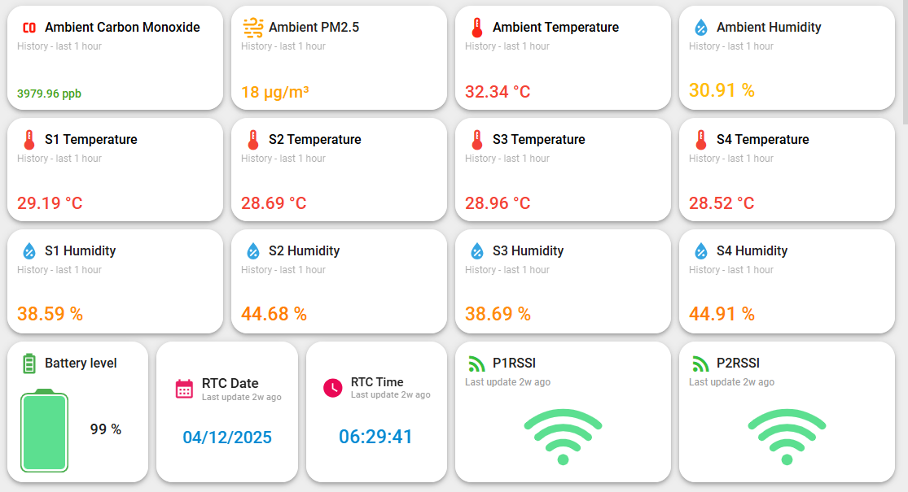
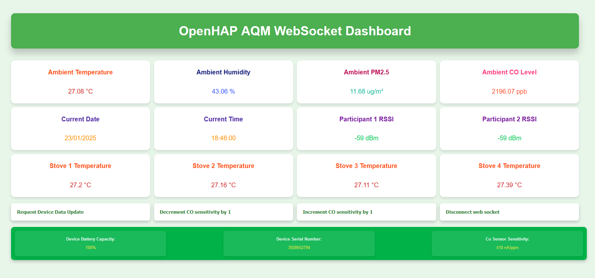
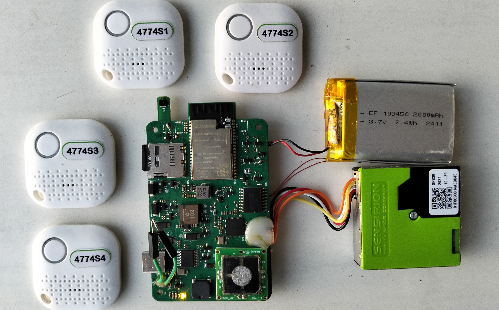
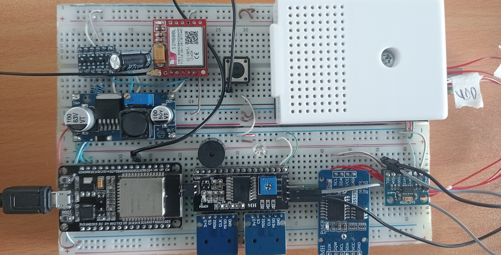
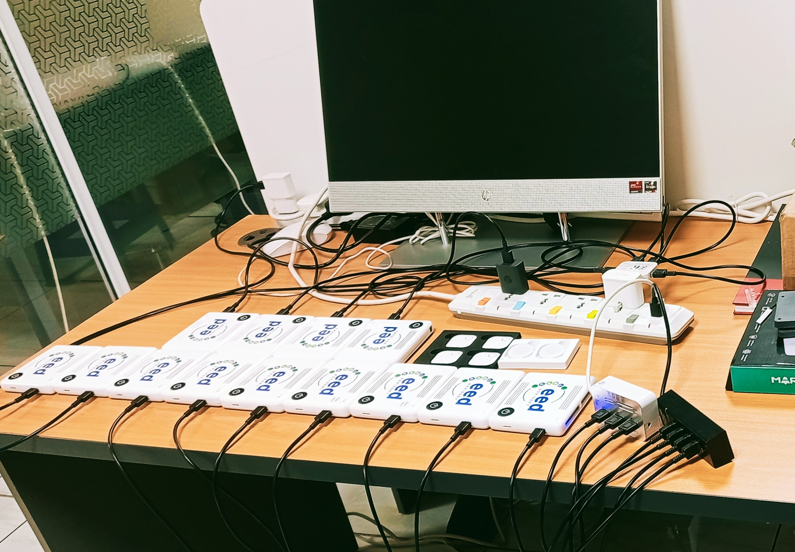

OpenHAP: Indoor Air Quality Monitoring Solution
OpenHAP is a production-grade indoor Air Quality Monitoring (AQM) system engineered for accurate and reliable environmental sensing in real-world household conditions. It continuously measures Carbon Monoxide (CO), Particulate Matter (PM2.5), and ambient Temperature & Humidity, generating high-resolution exposure data for both real-time monitoring and long-term analysis. The system integrates precision analog sensing, a high-signal-integrity multilayer PCB, and an event-driven ESP32 firmware architecture to ensure deterministic operation, measurement accuracy, and robustness in electrically noisy environments. Designed with resilience in mind, OpenHAP combines Wi-Fi and GSM connectivity with local SD card logging, guaranteeing continuous data availability even in low-infrastructure or offline scenarios. Beyond environmental sensing, the platform enables non-invasive monitoring of human activities that contribute to indoor pollution, providing actionable insights without direct user interaction. The device forms part of a complete edge-to-cloud IoT pipeline, securely streaming telemetry to ThingsBoard for visualization, analytics, and data-driven decision-making.
The OpenHAP system progressed beyond laboratory validation into a real-world, large-scale deployment. Commissioned by EED Advisory , the device was deployed in Namibia as part of a research exercise sanctioned by the United Nations, focused on assessing the risks posed by traditional cooking jikos to human health. A total of 25 OpenHAP devices were installed across multiple rural households to continuously monitor carbon monoxide exposure associated with three-stone jiko cooking practices. The collected data was used to analyze exposure trends and contribute to determining mortality risks linked to prolonged carbon monoxide inhalation in underserved communities.
From an engineering perspective, the project provided end-to-end experience spanning rapid prototyping, hardware and firmware iteration, design for manufacturing (DFM), regulatory certification, and post-deployment technical support. All devices were certified by KEBS prior to shipment, ensuring compliance with applicable safety and quality standards. Deployment and operational support were conducted remotely, with engineering coordination carried out from Kenya while the field deployment occurred in Namibia. The system operated reliably throughout the study period, and the project successfully met its intended research objectives, validating both the technical design and the overall system architecture.
AQM Device
GSM/ WiFi / BLE
Wired & BLE
Lead Design Engineer
Prototype to DFM
Project Visuals

The production-ready OpenHAP device and its accessories.

Multilayer PCB layout designed in KiCad (Front view).

Multilayer PCB layout designed in KiCad (Back view).

Event-driven finite state machine architecture implemented using ESP-IDF.

Cloud-based ThingsBoard dashboard for remote monitoring and analytics.

Local WebSocket dashboard providing real-time data visualization.

Inside the production-ready OpenHAP device.

Openhap Prototype.

Openhap Devices Charging.